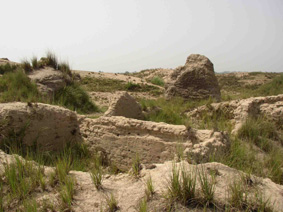

| In
2002, a detailed topographical survey of the site was undertaken,
to create a contour map (below) indicating the position of
structures visible on the surface. Much of the site consists of gently
undulating terrain with no visible surface features, and covered with
areas of halfa-grass. However, several areas present a different
appearance. The south-eastern part of the site is formed of pedestals
of archaeological fill and remnants of mud-brick structures, created
through the removal of parts of the mound to use as agricultural fertiliser
(a common practice in the late 19th and early 20th centuries). The
traces of the narrow-gauge railway track built to remove the deposits
are still visible today, along the access track from the nearby road.
The central part of the site, west of the SCA resthouse and magazine,
was termed the 'citadel' by Flinders Petrie, on account of its elevated
position and the presence of multi-roomed mud-brick structures on
the surface. Petrie believed this area was a later foundation, atop
a sand mound, but analysis of the open sections revealed evidence
of earlier phases of building activity in this area. |

Looking
west over the Citadel area, with multi-roomed mud-brick structures
visible in the foreground.
|